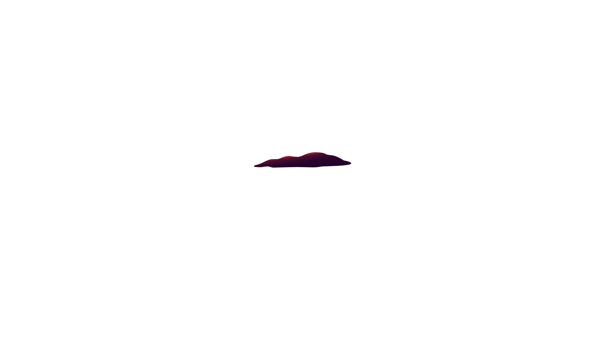
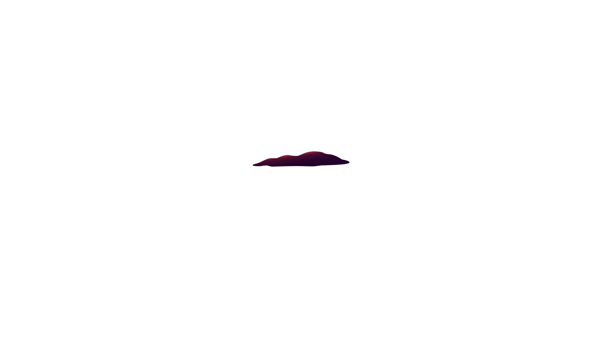

Já faz um tempo que o efeito Parallax saltou dos jogos para os sites, e através de diferentes técnicas se tornou uma das tendências mais atraentes no design para web. Com o uso principalmente de Javascript, e por vezes de HTML5 e CSS3, muitos sites criaram efeitos bem interessantes e criativos, que proporcionam belas experiências e aumentam a imersão do usuário. Normalmente, esse efeito está atrelado a rolagem da página.
 
